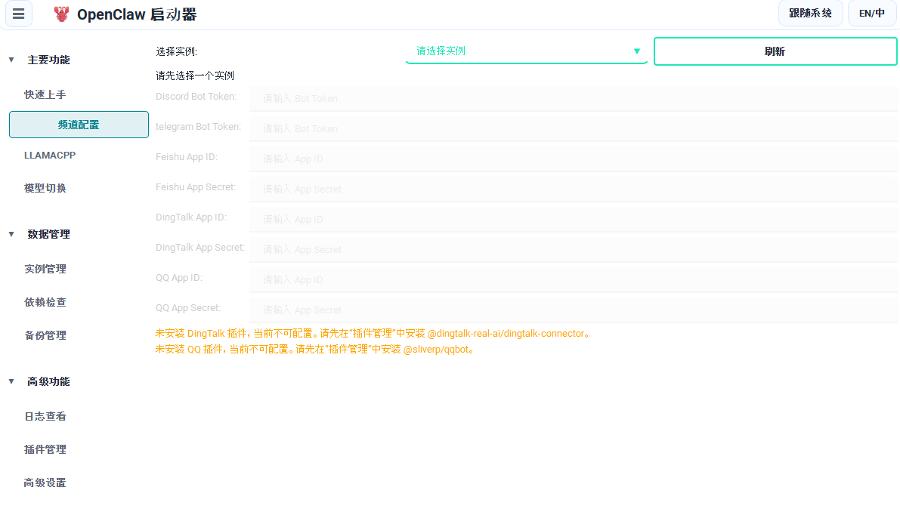
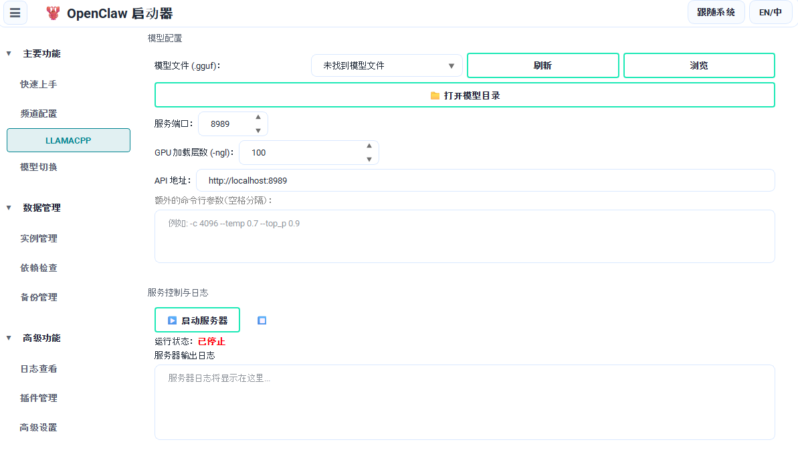
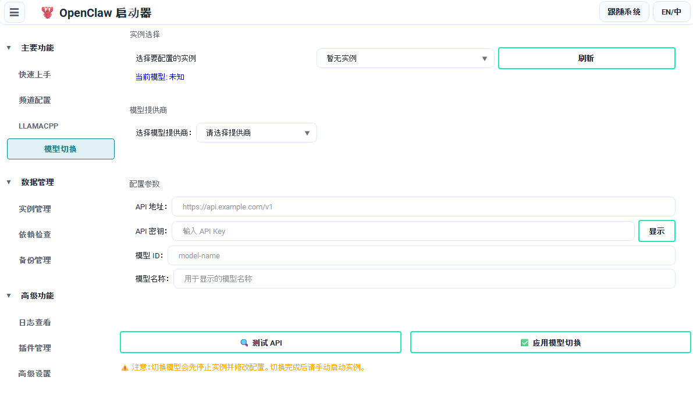

本地 OpenClaw + 本地 LLM，一键可视化部署
围绕本地化部署场景，从依赖准备、实例管理到 LlamaCPP 与模型切换，全流程图形化可控。
macOS / Windows
MIT License
PySide6
围绕本地化部署场景，从依赖准备、实例管理到 LlamaCPP 与模型切换，全流程图形化可控。
从初始化配置到生产运维，提供完整的一站式管理能力
六步完成初始化：依赖安装、实例创建、模型配置、频道配置、启动实例、打开 WebUI。
创建 / 启动 / 停止 / 删除，支持更新前自动备份、打开实例目录和 CLI。
管理 OpenClaw / Node.js（必需）与 Python / uv（可选）版本，支持下载和默认切换。
按实例维护 Discord、Telegram、Feishu、DingTalk、QQ 等参数，保存前支持停机检查。
本地 GGUF 推理服务 + 在线/本地提供商切换（OpenAI、DeepSeek、Moonshot、Ollama、Llama.cpp）。
插件安装/卸载、推荐插件一键安装；zip 备份与恢复后自动尝试重装依赖。
与 README 保持一致：下载 → 安装 → 进入快速上手面板
直观的图形界面，覆盖完整的运维管理场景

快速上手

频道配置

LlamaCPP

模型切换

实例管理

依赖检查

备份管理

日志查看

插件管理